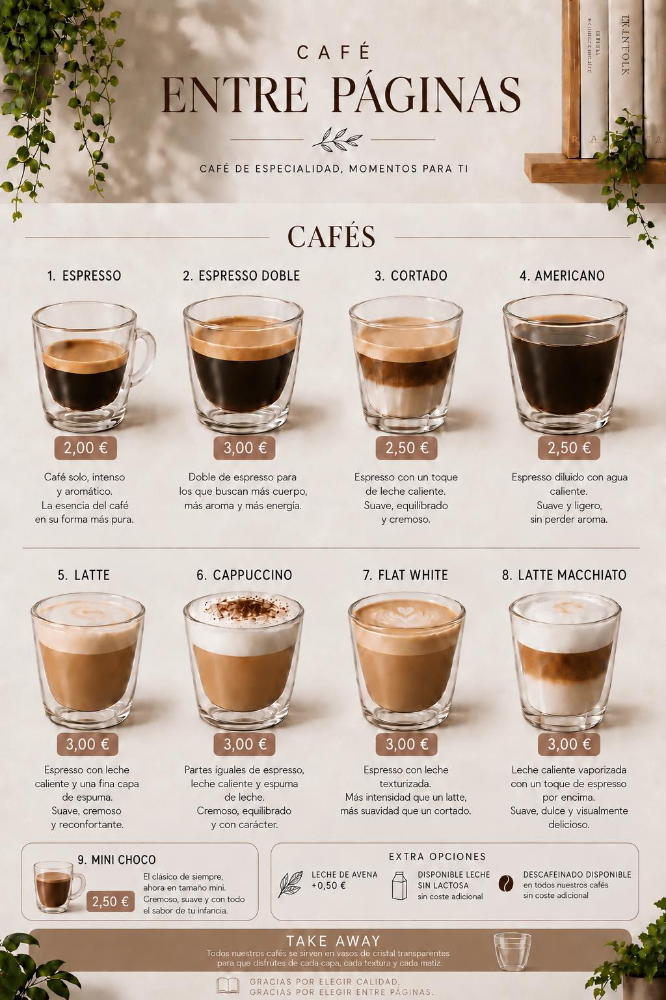
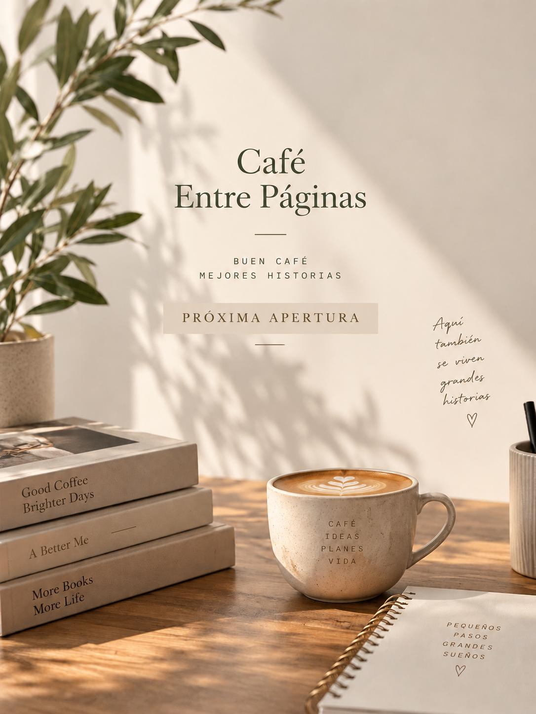
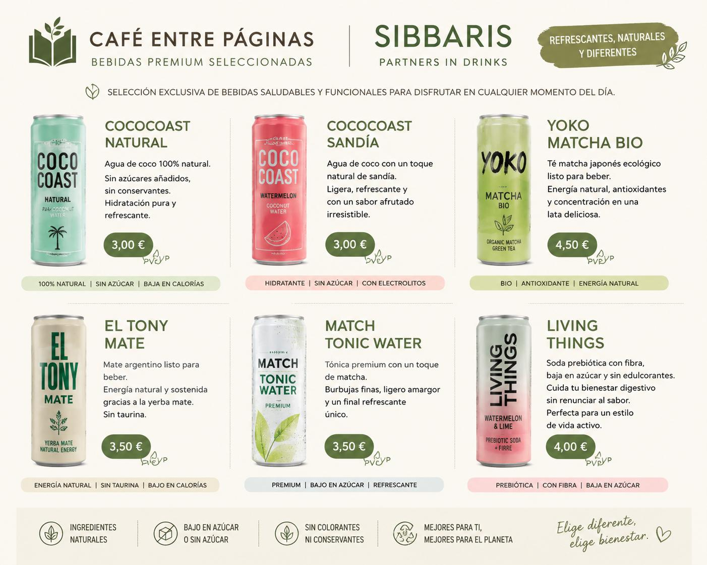
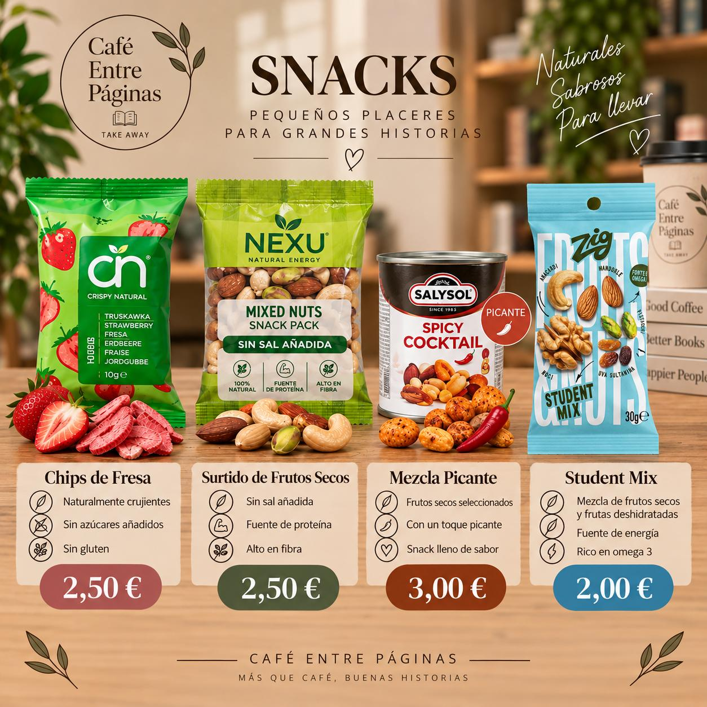
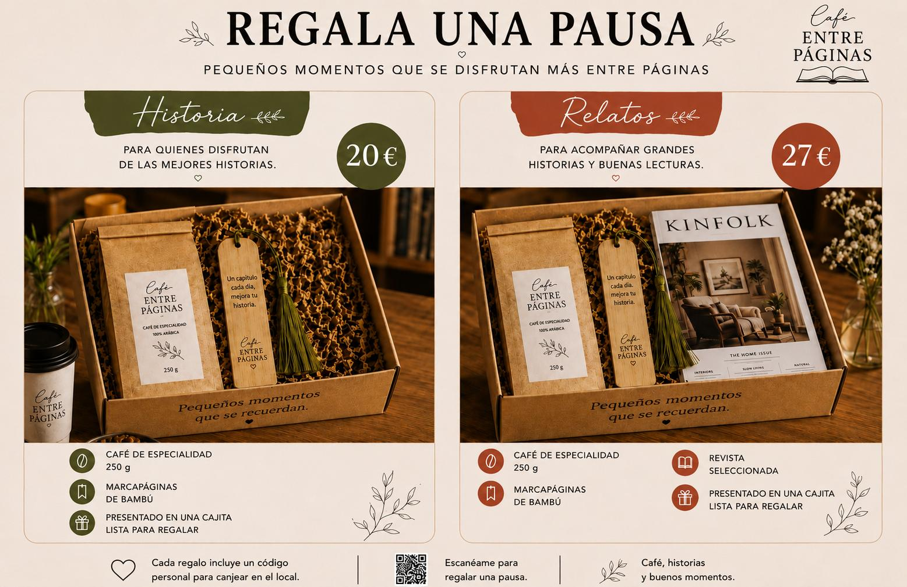

Para disfrutar al momento
Café de especialidad
Cafés preparados con cuidado para acompañar cada capítulo de tu día.
Alcobendas · Próxima apertura
Café de especialidad, productos saludables, lecturas y pequeños regalos para llevarte una pausa bonita contigo.

Café Entre Páginas
Entre el ritmo del barrio y las cosas que merecen un momento, nace un lugar pensado para llevarte algo más que un café: un sabor elegido con cuidado, una lectura inesperada, un detalle para regalar o una pausa para ti.
“Porque algunas de las mejores conversaciones empiezan con un café, y algunos de los mejores viajes empiezan entre páginas.”
Nuestra selección
Una selección cuidada de café, bebidas, snacks y detalles. La carta completa y los pedidos para recoger estarán disponibles próximamente.

Para disfrutar al momento
Cafés preparados con cuidado para acompañar cada capítulo de tu día.

Ligero, natural, diferente
Opciones frescas, funcionales y seleccionadas para cualquier momento.

Pequeños placeres
Sabores naturales para seguir tu día con energía y sin prisa.

Para regalar una pausa
Regalos con café, lectura y pequeños gestos que se recuerdan.
Nuestra historia
Café Entre Páginas nace de dos placeres sencillos y profundos: una conversación que comienza con un café y una historia capaz de transportarnos sin movernos.
Queremos que cada visita te deje algo: energía para seguir, una idea, una inspiración o, simplemente, un momento agradable en mitad del día.
Próxima apertura
Estamos preparando cada detalle. Síguenos para conocer la fecha de apertura y las novedades de la carta.
Lunes a viernes · 08:00–14:00 y 17:00–19:00
Sábados y domingos · 09:30–13:30